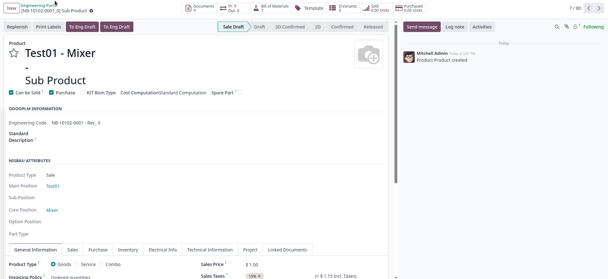

<section class="oe_container">
    <div class="oe_row oe_spaced">
        <div class="oe_span12">
            <h2 class="oe_slogan" style="color:#875A7B">Activity validation<br>
            </h2>
            <h3 class="oe_slogan">Improve the comunication process on OdooPLM</h3>
            <h3 class="oe_centeralign">The module is developed and maintained by <b>OmniaSolutions</b>, Further information at <a href="https://www.omniasolutions.website" style="text-decoration:none; color:#875A7B">www.omniasolutions.website</a></h3>
        </div>
        <div class="oe_span6">
            <p style="font-size:18px; text-align:justify; margin-top:20px; margin-right:50px">
				This module allows you:
			    <ul>
	                <li>Manage modifcation request from odoo and the cad application</li>
	                <li>Manage the engineering request</li>
	                <li>Manage the engineering order</li>
	                <li>Control the status of your requests based on the bom</li>
                </ul>
            </p>
         </div>
         <div class="oe_span12" style="text-align:justify; margin-top:20px;">
				<div class="oe_span8">
                    
                </div>    
                <div class="oe_span4">
                    You can assign activity from odoo to each cad user.
                </div>
        </div>
         <div class="oe_span12" style="text-align:justify; margin-top:20px;">
                <div class="oe_span4">
                    You can manage change request and order and inform the cad user about the modification
                </div>
                <div class="oe_span8">
                    
                </div>    
        </div>
         <div class="oe_span12" style="text-align:justify; margin-top:20px;">
                <div class="oe_span8">
                    
                </div>    
                <div class="oe_span4">
                    You can easely check your bom and see the modification that is involved in your bom
                </div>
        </div>
    </div>
</section>
